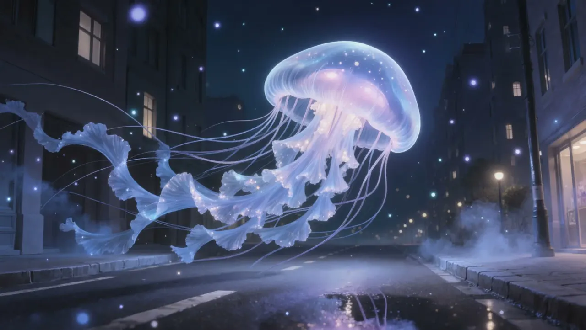
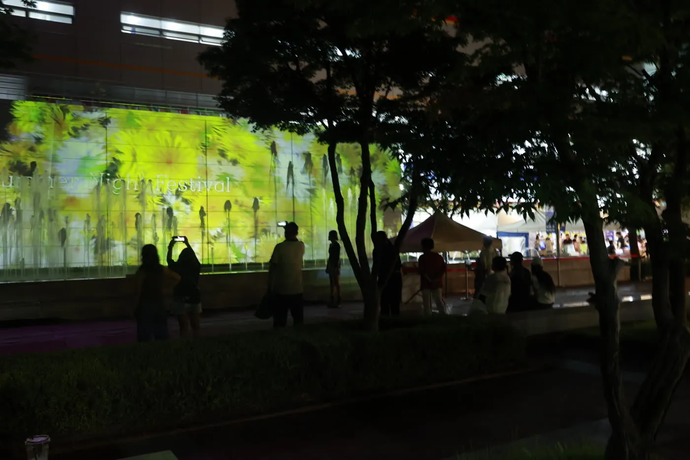
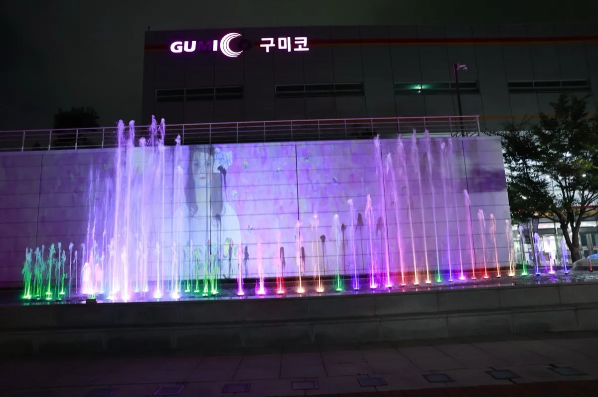

오늘은 봄날 · 대구 미디어아트 스튜디오공간을
화면으로.
작품을 직접 만들고, LED·빔프로젝터로 직접 겁니다. 미디어파사드 · LED 설치 · 렌탈 · 미디어아트 구독.
견적 문의지금 화면 · 빛의 해파리 · 2026
- 약 40편공공기관·문화시설 납품
- 1주일시안 3종
- 여성기업공공기관 우선구매 대상
- 직접생산확인중소기업자간 경쟁입찰
Works · 2026저희가 만든 화면
모두 처음과 끝이 이어지는 15초 루프입니다. 32:9 · 16:9 · 9:16 으로 잘라 LED에 바로 겁니다.
이 작품들을 매달 화면에. 미디어아트 구독
Installed걸린 자리
설치 사례 더 보기





Film세계유산을 화면으로
고령 지산동 고분군 세계유산 활동 프로그램을 위해 만든 미디어아트 영상입니다.
세계유산 활동 프로그램 · 지산동 고분군1분 26초 · 오늘은 봄날 제작
What we do하는 일
제작부터 설치·운영까지 한 계약. 발주처가 업체를 나눠 부르지 않아도 됩니다.